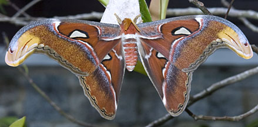
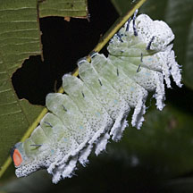
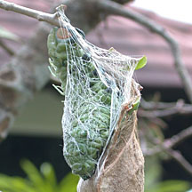
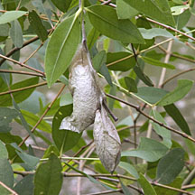

|
|
| arthropods text index | photo index |
| Phylum Arthropoda > Class Insecta |
| Atlas
moth Attacus atlas Family Saturniidae updated Nov 2019 Where seen? Like a magic furry flying carpet, this enormous moth is sometimes seen in our mangroves and other wild places. Atlas Moths are found only in Southeast Asia. They are common in Singapore, especially in November-January, although they are found throughout the year. Features: Wings 25-30cm across and among the insects with the largest wing area. It is so named because its wing patterns resemble a map. The wings have triangular transparent 'windows' whose purpose we don't know. The wing tips are hooked and some say resemble a snake's head complete with eyes, to scare off predators. Female Atlas moths attract males by secreting a pheromone through a gland at the end of the abdomen. The male Atlas Moths has huge long feathery antennae to track down the female by her pheromones. The females are much larger than the males and don't have feathery antennae. |
 Probably just emerged from the cocoon or awaiting for a female to emerge from hers. Pulau Ubin, Feb 04 |
 The caterpillar is large and whitish. Adam Road, May 04 |
|
| Atlas moth eggs are laid on the underside of a leaf. They hatch in
8-14 days depending on the temperature. The caterpillars are bluish
green with large bumps on them, and covered with a fine white powder,
large ones with orange spots near the end. The caterpillars eat a
wide variety of foodplants and may even wander from one to another.
Their foodplants include the various mangrove plants as well as fruit
trees. The Atlas moth's pupae is encased in a silken cocoon, emerging as an adult moth about 4 weeks later. Adult Atlas moths don't eat at all throughout their adult life which lasts for about two weeks. An adult Atlas moth doesn't even have a mouth and lives off fat reserves built up when it was a caterpillar. The adults quickly mate, lay eggs, and die shortly thereafter. |
 The caterpillar creating its cocoon. Pulau Ubin, Jan 02 |
 Cocoons in a Berembang tree. Pasir Ris Park, Dec 09 |
| Uses by humans: While the Silkworm
Moth (Bombyx mori, which belongs to a different family) which
makes its cocoon out of one unbroken silk strand, the Atlas Moth caterpillar
makes it out of broken strands of silk. Nevertheless, Atlas Moth cocoons
are used to make a durable silk called Fagara Silk, in northern India.
In Taiwan, their cocoons are made into pocket purses! Other mammoth moths: The Giant Silkworm Moth (Coscinocera hercules) has a wing surface area that rivals the Atlas Moth's. The Queen Alexandra Birdwing (Ornithoptera alexandrae) found in Papua New Guinea. Females are larger than males and can reach 28cm across and weigh more than 25g. The Hercules Moth (Cosdinoscera hercules) from Australia and Papua New Guinea is also 28cm. The Owlet Moth (Thysania agrippina) of tropical Americas can reach 30cm. |
| Atlas moths on Singapore shores |
On wildsingapore
flickr
|
| Other sightings on Singapore shores |
|
Links
References
|